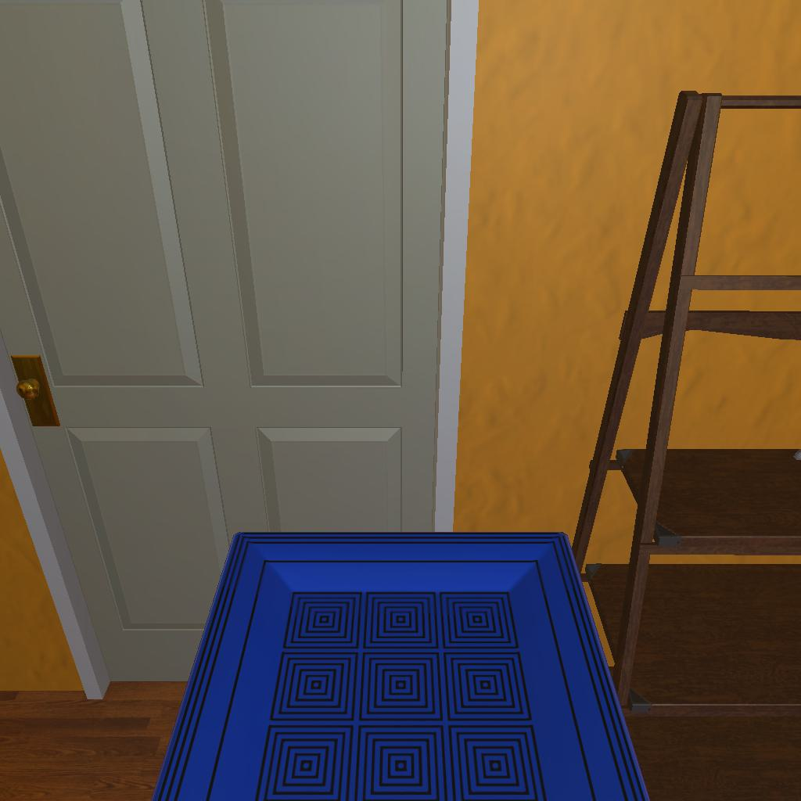

---------------------------------------------------------task: 3---------------------------------------------------------
--------------------------------------------------------------------------------------------------------------------------------------------------------------------
--------------------------------------------------------------------------------------------------------------------------------------------------------------------
Step:--------------------------------------------------------------------------5-------------------------------------------------------------------------------
----------------------------------------
VLM Prompt:
Image1:
**Instruction**
1. Analyze the provided image to identify all visible household objects, focusing on those relevant to the task description "look at plate under the floorlamp."
2. Use the analysis of the image and the task hint "The agent must find an object of the desired type, locate and turn on a light source with the desired object in-hand." to answer the question: what is the most reasonable action in the choices for the task description "look at plate under the floorlamp"?
4. Decide and write the answer using the template: The answer is: (i): , where i is the real number. If there is no desired object in the image, search every place based on **Initial Observation** to find the object. And if no one is exactly correct, choose a similar answer.
**Initial Observation**
You are in the middle of a room. Looking quickly around you, you can see armchair (1), garbagecan (1), tvstand (1), shelf (1-5), sofa (1), coffeetable (1), sidetable (1-2), drawer (1)
**Answer Choices**
(1): go to armchair 1
(2): go to garbagecan 1
(3): go to tvstand 1
(4): go to sofa 1
(5): go to coffeetable 1
(6): go to sidetable 1
(7): go to sidetable 2
(8): go to drawer 1
(9): go to shelf 4
(10): go to shelf 5
(11): put plate 1 in/on shelf 3
(12): examine plate 1
(13): examine shelf 3
**Answer**
Let's think step by step by following the instructions.
----------------------------------------
----------------------------------------
Original Response:
First, we analyze the image provided. The image shows a door, a portion of a wall, and a floor with a blue object on it. The blue object appears to be a tray or a plate with a pattern on it. We can also see a part of what seems to be a piece of furniture, possibly a shelf or a ladder.
As per the task description "look at plate under the floorlamp," we need to find a plate and a floorlamp. The image does not show a floorlamp, but the initial observation mentions various pieces of furniture in the room, which might be where the floorlamp is located near.
The task hint suggests that the agent needs to find an object of the desired type (a plate) and then locate and turn on a light source (the floorlamp) with the desired object in-hand.
Based on the provided image and initial observation, none of the answer choices directly state to go to a floorlamp. However, since we need to look at the plate under the floorlamp, it's reasonable to assume that the plate might be located on or near a table or a shelf near the floorlamp.
Since "sidetable" is mentioned twice in the initial observation, it's likely that the floorlamp is located next to one of the side tables.
The most reasonable action from the choices provided would be to go to one of the sidetables and look for the plate there. Since we do not have enough information to distinguish between sidetable 1 and sidetable 2, we must choose one as a starting point.
The answer is: (6): go to sidetable 1. If the plate is not there, we can then check sidetable 2 or other pieces of furniture mentioned in the initial observation.
----------------------------------------
----------------------------------------
>>> Refine Original VLM Response and Get Pure Action: go to sidetable 1
----------------------------------------
-----------------------------------------------------------------
Running time: 14.402230978012085 seconds
Total Money: 0.7121099999999999
-----------------------------------------------------------------
-----------------------------------------------------------------
Text Observation:You arrive at loc 7. On the sidetable 1, you see a floorlamp 1, a pillow 1, a laptop 1, a vase 1, a statue 1, a statue 2, a cellphone 1, a plate 2, a remotecontrol 1, a keychain 1, and a newspaper 1.
-----------------------------------------------------------------
UNSUCCEED